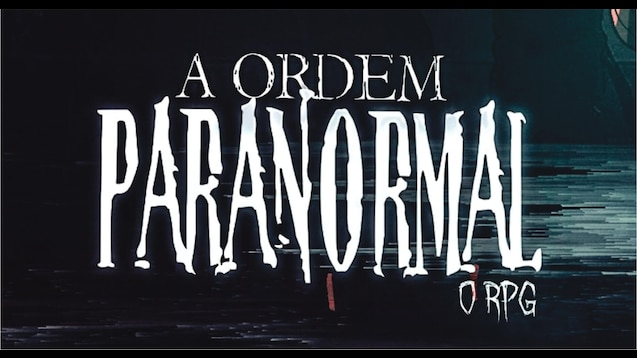

10 Curiosidades de Ordem Paranormal
As 10 melhores curiosidades sobre a Ordem
Neste site você ira descobrir as melhores curiosidades de Ordem Paranormal, o maior RPG brasileiro feito pelo streamer Rafael Lange mais conhecido como Cellbit.
Curiosidades
- 1 - Rituais são habilidades Ocultistas no universo de Ordem Paranormal, vistos pela primeira vez em A Ordem Paranormal e sendo mais aprofundados em Ordem Paranormal;
- 2 - Os Elementos do Outro Lado são uma das principais fundações do Ocultismo;
- 3 - Kaiser é um habilidoso hacker responsável por desenvolver a Central de Reconhecimento de Irregularidades Sobrenaturais, uma inteligência artificial que detecta atividades paranormais;
- 4 - Joui Jouki é um agente da Ordo Realitas que decidiu adaptar seus métodos após uma primeira missão traumática;
- 5 - Arthur Cervero, após perder quase tudo que tinha, se juntou à Ordo Realitas para conseguir proteger o que restou;
- 6 - Dante foi um ocultista preso por Tristan e Erin em janeiro, estando pessoalmente envolvido com Leonardo Gomes, o responsável pelo ritual que uniu Luciano e Fernando;
- 7 - Símbolos Ocultistas são um dos principais componentes do Ocultismo. Existem símbolos com propósitos diferentes, alguns são utilizados para realizar rituais enquanto outros são utilizados para representar Entidades;
- 8 - Uma menina de 16 anos ocupando o corpo do garoto que assassinou. Poucas pessoas sabem pelo que ela passou até se juntar à Ordo Realitas;
- 9 - Elizabeth Webber é uma agente da Ordem obcecada em desvendar os mistérios da Desconjuração;
- 10 - Thiago se tornou um jornalista para contar histórias de pessoas incríveis como seu pai, um renomado ator. Quando seu pai morreu, Thiago encontrou evidências ligando seu pai à Ordem.